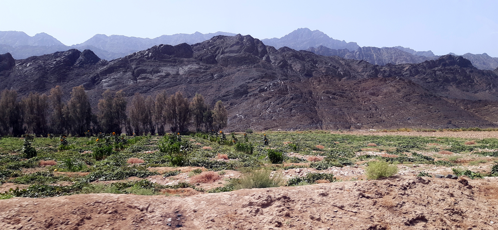
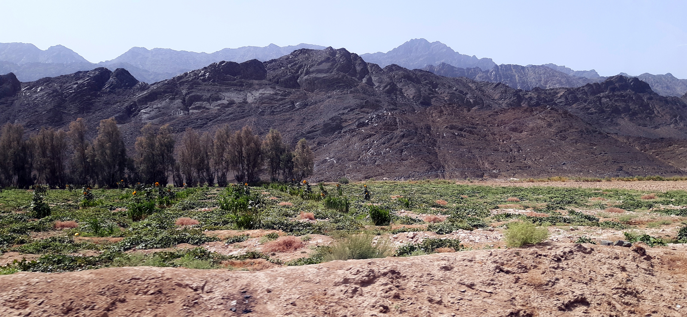

Welcome to Beautiful Landscapes of Pakistan
Discover and explore the stunning landscapes and beautiful scenery of Pakistan right here. From the majestic peaks of the Karakoram range to the lush green valleys of the Punjab, the breathtaking deserts of Balochistan to the scenic lakes and forests of Khyber Pakhtunkhwa, there's something for everyone.

 
